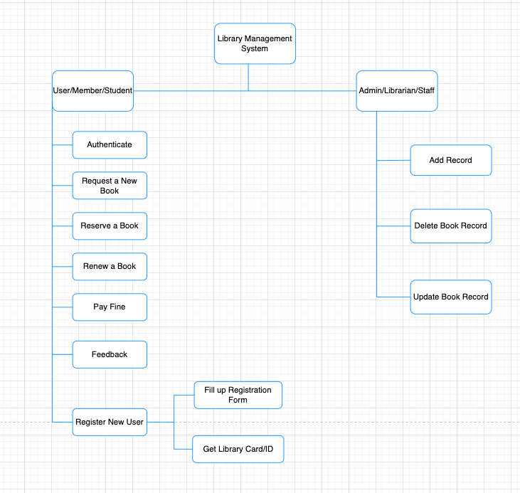
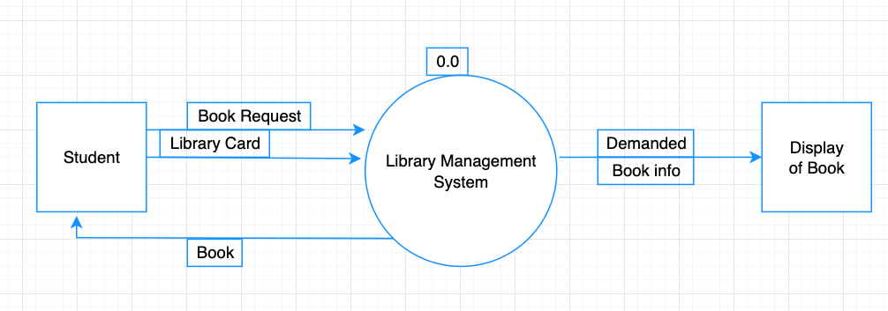
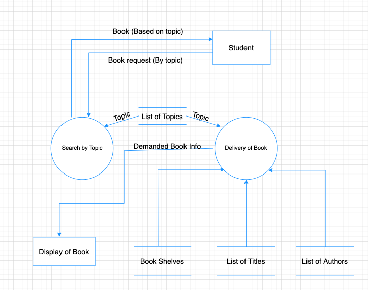

Project Overview
I designed a complete Library Management System as part of my IT System Design coursework. This project focused on applying structured systems analysis and design methodology (SSADM) — from requirements gathering through functional hierarchy decomposition to detailed Data Flow Diagrams (DFDs).
The system converts manual library operations into an automated online application, handling three major components: stock maintenance, transaction entry, and reporting.
Problems Solved
- Faster retrieval of book and member information
- Reduced workload for library staff through automation
- Eliminated manual tracking errors for issue dates, return dates, and fines
- Centralized book availability and member management
Phase 1: Requirements & Scope Definition
I began by identifying the system users (library staff and members) and defining the system boundary. The key functionality includes:
- Add/update member records
- Add/update book inventory
- Manage check-in/check-out transactions
- Calculate fines automatically based on return dates
- Generate reports on inventory and transactions
System Boundary Diagram:

Phase 2: Functional Hierarchy Diagram
I decomposed the system into a functional hierarchy, breaking down the top-level system into subsystems, modules, and individual functions.

Phase 3: Data Flow Diagrams (DFD)
Context Diagram (Level 0)
I created a context diagram showing the system as a single process with its external entities and data flows:

System Diagram (Level 1) & Detail Diagrams
I then expanded the context diagram into detailed DFDs showing internal processes, data stores, and data flows between components:

Level 2 DFD — Book Retrieval Process
I further decomposed the book transaction process into a Level 2 DFD, detailing how a student's book request flows through finding the book position, retrieving it from the shelf, and updating the borrowed books list:
Key Takeaways
- Structured analysis (SSADM) provides a clear methodology from requirements to implementation
- Functional hierarchy diagrams help identify module boundaries and responsibilities
- Data Flow Diagrams at multiple levels communicate system behavior to both technical and non-technical stakeholders
- Defining system boundaries early prevents scope creep during implementation